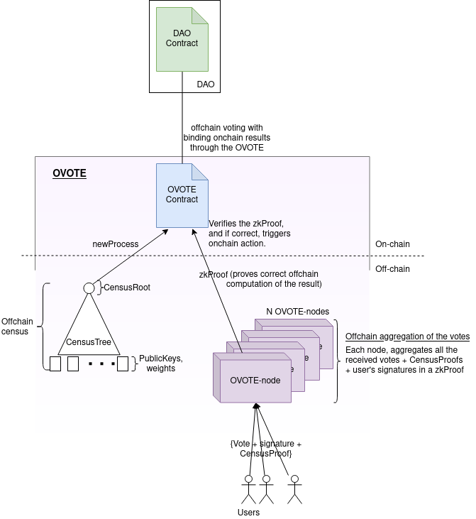
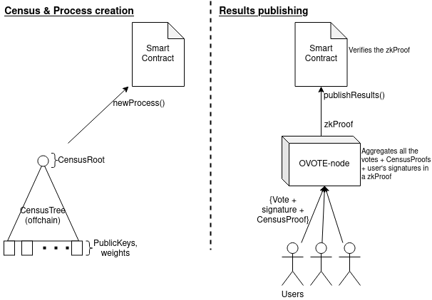

2022-07-05 by arnaucube We present OVOTE (v0.5): Offchain Voting with Onchain Trustless Execution. TL;DR: OVOTE is a L2 design for voting using validity-proofs (zkSNARK proofs), which is similar to zkRollups. The main idea is that the votes are aggregated offchain, and proved onchain through a zkSNARK proof, resulting in constant gas costs while scaling up to thousands of voters through a single Ethereum transaction. We present the technical document together with the implementation of the zk circuits, smart contracts and backend node.
This is a project that we started 4 months ago in the Aragon ZK Research guild, continuing the ideas that we’ve been discussing in Vocdoni for the past year, with the aim to be a contribution to the Aragon ecosystem. OVOTE (v0.5) is a short-term project with a specific scope, with the aim to be a first practical step towards a future of high scalablility & privacy preserving voting systems for DAOs using zkSNARKs. This forum post presents the high level idea, the full design can be found at the OVOTE technical document.
The main idea is that the computation and verification of the votes (vote + signature + censusProof), is computed off-chain. Then, a zkSNARK proof (validity-proof) is sent to the Smart Contract which verifies that everything is correct, similar to a zkRollup (Validium), but instead of economic transactions updating the Rollup state, with votes aggregated into a Result. With this design, we can have thousands of users voting offchain, triggering onchain execution in a trustless way. This is done with constant gas costs without needing Oracles or optimistic multisigs. 
Votes are computed offchain, and a zkSNARK proof (validity-proof) is verified onchain which proves that votes aggregation result is correct and that includes votes issued by each user belonging to the census.  - Census is created offchain, containing user’s public keys. - Once the census is closed, the CensusRoot is sent to the SmartContract, and the process is created. - Users send their votes + signatures + censusProof to the OVOTE-node - Once process is finished, the OVOTE-node aggregates all the received votes, computes the result (using user’s weights) and generates the zkSNARK proof. - Then, any user can get the generated proof and send it to the SmartContract, which will verify it and if it’s correct will trigger the configured actions (eg. moving funds).
We have implemented the zk circuits, the smart contracts, clientlib and the backend node (see next subsection with the links to the repos). We have almost an usable version of OVOTE which we hope to finish during next weeks, with the idea that can be used to build a product for the Aragon ecosystem. In the following subsection we list the different components that we have implemented.
- Circuits: https://github.com/aragonzkresearch/ovote/tree/main/circuits - zkSNARK (Groth16) Circom circuit, which proves the correct offchain computation of the aggregation of valid user votes and result computation. - Smart contracts: https://github.com/aragonzkresearch/ovote/tree/main/contracts - Onchain registry of processes, also verifies the zkSNARK proof and results. - Client lib: https://github.com/aragonzkresearch/ovote/tree/main/clientlib - Typescript library used in the user’s browser, to create keys, signatures and cast the votes. - Node (Server): https://github.com/aragonzkresearch/ovote-node - OVOTE-node, similar to a zkRollup node. Aggregates the votes and generates the zkSNARK proof.
Properties covered for this initial version. - Properties covered: - Trustless: nobody (neither users nor the Node) is able to modify votes values, neither add fake votes (eg. votes which user is not in the census). - Offchain/gasless voting: users vote offchain, and the OVOTE-node aggregates the computation & verification of all the votes and census-proofs, in a small zkSNARK proof (Validity-proof), which is sent to the SmartContract. - Binding execution: because of its trustless characteristic, it can trigger onchain actions in a trustless way (eg. moving funds of a DAO), directly from the voting process result (without human intervention). - Chain agnostic census: the census is build off-chain, and the zkSNARK proof of correct results computation can be published into any EVM chain (furthermore, into any chain that supports Pairing computation). So an OVOTE census could be used in Ethereum mainnet, but also in Polygon or GnosisChain. - Scalability: in a similar fashion than zkRollups, OVOTE scales to thousands of users under a single ethereum tx (results + proof publication). - Properties not covered (that will be covered in future designs): - No voter privacy - While the relation between votes & publicKeys is not published in the blockchain, the OVOTE-node will know these relations and could make them public. So, unless users use a node managed by themselves, the votes info is assumed to be ‘public’. - Future designs by the Aragon ZK Research will focus on privacy preserving voting solutions. - No token-based voting - The scope of OVOTE is not about token-based voting, but it is planned in the mid-term future (check section: “Future use cases > OVOTE-DAO”)
The aim of this project is to be a first step towards the usage of zkSNARKs technology for DAOs tooling. In the following sub-sections we describe some of the inmediate use cases that can be done with the current implementation, some other use cases that we plan to implement, and some further research that we will do.
OVOTE is a modular component, which can be plugged into AragonApp.
Potentially, users, could deploy their own standalone instance of OVOTE with a minimalistic UI
The OVOTE proof Verifier would be deployed in Ethereum, and any project could call it to verify their OVOTE proofs.
The Verifier contract contains part of the Trusted Setup which ceremony would be organized by Aragon
Tokenomics are not in the scope of this project, but we identified some places where the usage of ANT would be useful:
To pay the prover-server costs: Aragon could have servers that DAOs can use to compute the zkSNARK proofs, these are powerful (and a expensive) machines. There could be a fee in ANT that needs to be paid to the prover-server when publishing the results + proof on the Smart Contract.
This could be achieved by putting the prover-server ethereum address as a public input of the circuit, so the Smart Contract needs to know it to verify the proof, thus the contract can require sending ANT to that address, in the results publishing (& verification) transaction call. We aim to do more research about possible other uses of ANT tokens in the context of OVOTE.
Use cases available with the current implementation:
Offchain multisig with onchain results: users make offchain signatures, when a certian threshold of support is reached, the node generates a proof (validity-proof) and the SmartContract verifies it, if correct, it triggers the configured transaction (eg. DAO funds movement).
Offchain referendum with onchain results: similarly to the OVOTE, but users cast a vote which can be ‘yes’ or ‘no’, meaning that when the results are presented, it is known how many votes are ‘yes’ and how many votes are ‘no’.
Onchain Anonymous voting: the same census can be reused to users generating zkProofs that they belong to the census, and sending them directly to the onchain SmartContract. This approach is costly for users, but allows for anonymous voting. This use case would be cheap in non-congestioned EVM chains like Polygon or GnosisChain.
An interesting idea to build on top of OVOTE, is to set up a Smart Contract that builds a Census Tree, where users can deposit ETH or any ERC20 token, and when the deposit is done, the contract adds a new leaf in the Census Tree with a weight value corresponding to the amount of tokens deposited by the user. In this way, the contract maintains the Census Tree, based on the deposits of tokens of the users, and the users can vote on proposals to spend the deposited tokens by using the same approach than the OVOTE. This could be managed by a contract on top of the OVOTE contract. In short words, this would be a kind of ‘offchain DAO with onchain validity-proofs’, where users make token deposits to the DAO contract, and then they vote offchain based on the weight of their deposited tokens, and the results with a zkSNARK proof is published to the DAO contract, which if correct, proves the correctness of the results and triggers a transaction execution (which, can be DAO funds movement). In one line: a DAO where the census is built by the tokens deposited in the contract, where the members vote based on their deposited tokens through OVOTE, and the results are published onchain together with the OVOTE zkSNARK proofs, to triger the funds movement. This is our next step once OVOTE is implemented, as for having an initial version of OVOTE-DAO we could reuse the same zk-circuit that we implemented for OVOTE, and most of the needed implementation would be for the contract that gathers the user’s deposits onchain and build the CensusTree.
Proofs recursion: this would allow users generating a zkproof that they belong to the census, and the Node would generate a zkproof aggregating the verification of the user’s zkproofs. In this way, users still enjoy gasless voting, but with anonymicity.
Ring signatures inside zkSNARK circuit: this would allow users proving that they belong to the census without revealing who they are (Monero style), and later all the signatures verification would be proven inside a zkSNARK circuit by the node. This would bring anonymous voting while having the scalability that we have with OVOTE.
EthStorageProofs and EthSignatures: instead of using ‘snark-friendly’ cryptographic primitives (MerkleTree, Hash function, and elliptic curve) if we can have inside a zk circuit the Ethereum cryptographic primitives (such as Ethereum Patricia Trie (with RLP encoding), keccak256 hash function, and secp256k1 elliptic curve), we could use as census the already existing Ethereum state. This would allow to directly use Ethereum token-holdings as a census for voting.
Research on results aggregation: this would allow for different nodes sending different results that are aggregated.
Researching other proving schemas such as PLONK.
OVOTE (Offchain Voting with Onchain Trustless Execution) is the research project name. Aragon could build a product using OVOTE, and this product could have a more user-friendly name such as zkMultisig, zkGov, gaslessVoting, etc.
Technical paper (draft): https://research.aragon.org/docs/ovote A forum version of this post can be found at: https://forum.aragon.org/t/we-present-ovote-offchain-voting-with-onchain-trustless-execution/3603